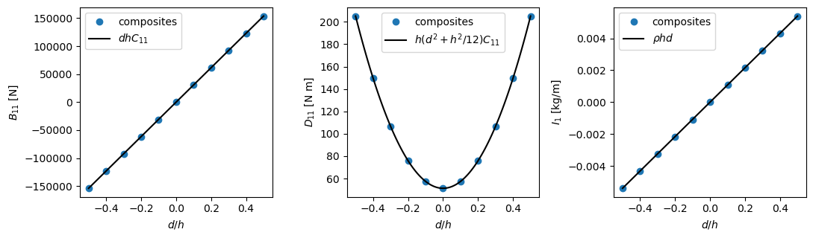

Isotropic plate with an offset#
A skin modelled on its mould line, or a plate whose nodes are not on its mid-surface, has its reference surface away from the mid-surface. This example creates an isotropic plate with isotropic_plate and an offset \(d\), the position of the mid-surface relative to the reference surface, see Conventions, and compares every thickness integral of the Laminate with its closed form: the matrices \(A\), \(B\), \(D\) of the CLPT, the transverse shear
stiffness of the FSDT, the matrices \(E\), \(F\), \(H\) of the TSDT and the moments of the density used in the mass matrices. SI units are used throughout.
The closed form#
With the same plane-stress stiffness \(C\) in the whole thickness, the integrals of Laminate stiffness and plate theories,
are moments of \(z\). Writing \(z = d + s\), with \(s\) uniform in \([-h/2, h/2]\), \(\int (d + s)^n ds = h \langle (d + s)^n \rangle\), where the odd moments of \(s\) vanish and \(\langle s^2 \rangle = h^2/12\), \(\langle s^4 \rangle = h^4/80\), \(\langle s^6 \rangle = h^6/448\):
This is the shift of the reference surface of Vasiliev and Morozov [1], Eq. (5.28), \(B = B^0 + d A\) and \(D = D^0 + 2 d B^0 + d^2 A\), with \(B^0 = 0\) and \(D^0 = h^3 C/12\) about the mid-surface. The offset creates a membrane-bending coupling \(B \neq 0\) in a plate that has none about its mid-surface.
The transverse shear stiffness \(\bar{A}_{ts} = G h I\) does not depend on the reference surface. For a homogeneous plate the equilibrium distribution is the parabola \(\tau_{xz} = 3 Q_x/(2h) (1 - 4 \bar{z}^2/h^2)\), \(\bar{z}\) measured from the mid-surface, whose complementary energy \(3 Q_x^2/(5 G h)\) equals the energy \(Q_x^2/(2 \kappa G h)\) of a constant distribution for \(\kappa = 5/6\), see Shear correction. Rohwer [2], Sec. 4.1, p. 17, states that this ratio “always amounts to 5/6, independent of the Poisson’s ratio or the position of the reference surface”, hence \(A_{ts} = \frac{5}{6} G h I\) also with an offset.
print_table prints a result, its reference and the relative difference; for a reference equal to zero the difference is divided by a scale given in the row.
[1]:
%matplotlib inline
import numpy as np
import matplotlib.pyplot as plt
from composites import isotropic_plate
def print_table(rows):
"""Print each result, its reference value and their relative difference
``rows`` holds ``(name, value, reference)`` or ``(name, value, reference,
scale)``; the difference is divided by ``scale``, by default the absolute
value of the reference, e.g. the largest term of the matrix when the
reference is zero.
"""
print('%-36s %14s %14s %10s' % ('quantity', 'composites', 'reference',
'rel. diff.'))
for row in rows:
name, value, ref = row[:3]
scale = row[3] if len(row) > 3 else abs(ref)
print('%-36s % 14.6e % 14.6e %10.1e' % (name, value, ref,
abs(value - ref)/scale))
Stiffness matrices#
An aluminium plate of 2 mm whose mid-surface is 0.6 mm above the reference surface. The plane-stress stiffness \(C\) and the shear modulus \(G\) are written here from \(E\) and \(\nu\); the table compares the terms of each matrix.
[2]:
E, nu, h, d, rho = 70e9, 0.3, 2e-3, 0.6e-3, 2700.
lam = isotropic_plate(thickness=h, E=E, nu=nu, offset=d, rho=rho)
C = E/(1 - nu**2)*np.array([[1, nu, 0], [nu, 1, 0], [0, 0, (1 - nu)/2]])
G = E/(2*(1 + nu))
print('B =')
print(lam.B)
print()
print_table([
('A11 = h C11', lam.A11, h*C[0, 0]),
('A12 = h C12', lam.A12, h*C[0, 1]),
('A66 = h C66', lam.A66, h*C[2, 2]),
('B11 = d h C11', lam.B11, d*h*C[0, 0]),
('B12 = d h C12', lam.B12, d*h*C[0, 1]),
('B66 = d h C66', lam.B66, d*h*C[2, 2]),
('D11 = h (d^2 + h^2/12) C11', lam.D11, h*(d**2 + h**2/12)*C[0, 0]),
('D12 = h (d^2 + h^2/12) C12', lam.D12, h*(d**2 + h**2/12)*C[0, 1]),
('D66 = h (d^2 + h^2/12) C66', lam.D66, h*(d**2 + h**2/12)*C[2, 2]),
('A44 = 5/6 G h', lam.A44, 5/6*G*h),
('A55 = 5/6 G h', lam.A55, 5/6*G*h),
('A45 = 0 (scale G h)', lam.A45, 0., G*h),
])
B =
[[92307.69230769 27692.30769231 0. ]
[27692.30769231 92307.69230769 0. ]
[ 0. 0. 32307.69230769]]
quantity composites reference rel. diff.
A11 = h C11 1.538462e+08 1.538462e+08 0.0e+00
A12 = h C12 4.615385e+07 4.615385e+07 0.0e+00
A66 = h C66 5.384615e+07 5.384615e+07 1.4e-16
B11 = d h C11 9.230769e+04 9.230769e+04 1.6e-16
B12 = d h C12 2.769231e+04 2.769231e+04 2.6e-16
B66 = d h C66 3.230769e+04 3.230769e+04 0.0e+00
D11 = h (d^2 + h^2/12) C11 1.066667e+02 1.066667e+02 1.3e-16
D12 = h (d^2 + h^2/12) C12 3.200000e+01 3.200000e+01 1.1e-16
D66 = h (d^2 + h^2/12) C66 3.733333e+01 3.733333e+01 0.0e+00
A44 = 5/6 G h 4.487179e+07 4.487179e+07 6.6e-16
A55 = 5/6 G h 4.487179e+07 4.487179e+07 6.6e-16
A45 = 0 (scale G h) -0.000000e+00 0.000000e+00 0.0e+00
Matrices of the TSDT and moments of the density#
The higher moments follow from the same expansion, \(\langle (d + s)^3 \rangle = d^3 + d h^2/4\), \(\langle (d + s)^4 \rangle = d^4 + d^2 h^2/2 + h^4/80\) and \(\langle (d + s)^6 \rangle = d^6 + 15 d^4 h^2/12 + 15 d^2 h^4/80 + h^6/448\), the list m below. They give \(E = h \langle z^3 \rangle C\), \(F = h \langle z^4 \rangle C\), \(H = h \langle z^6 \rangle C\), and the moments of the density of Mass integrals,
\(I_n = \int \rho z^n dz = \rho h \langle z^n \rangle\), stored as intrho, intrhoz, intrhoz2, intrhoz3, intrhoz4 and intrhoz6.
[3]:
m = [1., d, d**2 + h**2/12, d**3 + d*h**2/4,
d**4 + d**2*h**2/2 + h**4/80, None,
d**6 + 15/12*d**4*h**2 + 15/80*d**2*h**4 + h**6/448]
print_table([
('E11 = h <z^3> C11', lam.E11, h*m[3]*C[0, 0]),
('F11 = h <z^4> C11', lam.F11, h*m[4]*C[0, 0]),
('H11 = h <z^6> C11', lam.H11, h*m[6]*C[0, 0]),
] + [('%s = rho h <z^%d>' % (name, n), getattr(lam, name), rho*h*m[n])
for name, n in (('intrho', 0), ('intrhoz', 1), ('intrhoz2', 2),
('intrhoz3', 3), ('intrhoz4', 4), ('intrhoz6', 6))])
quantity composites reference rel. diff.
E11 = h <z^3> C11 1.255385e-01 1.255385e-01 2.2e-16
F11 = h <z^4> C11 1.614769e-04 1.614769e-04 1.7e-16
H11 = h <z^6> C11 2.950020e-10 2.950020e-10 5.3e-16
intrho = rho h <z^0> 5.400000e+00 5.400000e+00 0.0e+00
intrhoz = rho h <z^1> 3.240000e-03 3.240000e-03 1.3e-16
intrhoz2 = rho h <z^2> 3.744000e-06 3.744000e-06 2.3e-16
intrhoz3 = rho h <z^3> 4.406400e-09 4.406400e-09 3.8e-16
intrhoz4 = rho h <z^4> 5.667840e-12 5.667840e-12 1.4e-16
intrhoz6 = rho h <z^6> 1.035457e-17 1.035457e-17 4.5e-16
Dependence on the offset#
\(B\) grows linearly and \(D\) quadratically with the offset, while \(A\) and the transverse shear stiffness do not change. Without offset the density is symmetric about the reference surface, and the odd moments \(I_1\), \(I_3\) and the coupling \(B\) vanish. The markers are the results of composites, the lines the closed forms.
[4]:
offsets = np.linspace(-h/2, h/2, 11)
lams = [isotropic_plate(thickness=h, E=E, nu=nu, offset=di, rho=rho)
for di in offsets]
dd = np.linspace(-h/2, h/2, 101)
fig, ax = plt.subplots(1, 3, figsize=(11, 3.3))
ax[0].plot(offsets/h, [l.B11 for l in lams], 'o', label='composites')
ax[0].plot(dd/h, dd*h*C[0, 0], 'k-', label='$d h C_{11}$')
ax[0].set_ylabel('$B_{11}$ [N]')
ax[1].plot(offsets/h, [l.D11 for l in lams], 'o', label='composites')
ax[1].plot(dd/h, h*(dd**2 + h**2/12)*C[0, 0], 'k-',
label='$h (d^2 + h^2/12) C_{11}$')
ax[1].set_ylabel('$D_{11}$ [N m]')
ax[2].plot(offsets/h, [l.intrhoz for l in lams], 'o', label='composites')
ax[2].plot(dd/h, rho*h*dd, 'k-', label=r'$\rho h d$')
ax[2].set_ylabel(r'$I_1$ [kg/m]')
for a in ax:
a.set_xlabel('$d/h$')
a.legend()
fig.tight_layout()
plt.show()
lam0 = isotropic_plate(thickness=h, E=E, nu=nu, rho=rho)
print_table([
('offset 0: intrhoz (scale rho h^2)', lam0.intrhoz, 0., rho*h**2),
('offset 0: intrhoz3 (scale rho h^4)', lam0.intrhoz3, 0., rho*h**4),
('offset 0: max |Bij| (scale A11 h)', np.abs(lam0.B).max(), 0.,
lam0.A11*h),
('A55 at d = h/2 vs d = 0', lams[-1].A55, lam0.A55),
])

quantity composites reference rel. diff.
offset 0: intrhoz (scale rho h^2) 0.000000e+00 0.000000e+00 0.0e+00
offset 0: intrhoz3 (scale rho h^4) 0.000000e+00 0.000000e+00 0.0e+00
offset 0: max |Bij| (scale A11 h) 0.000000e+00 0.000000e+00 0.0e+00
A55 at d = h/2 vs d = 0 4.487179e+07 4.487179e+07 0.0e+00
References#
Vasiliev, V. V. and Morozov, E. V., Mechanics and Analysis of Composite Materials, Elsevier, Oxford, 2001.
Rohwer, K., Improved Transverse Shear Stiffnesses for Layered Finite Elements, DFVLR-FB 88-32, 1988.